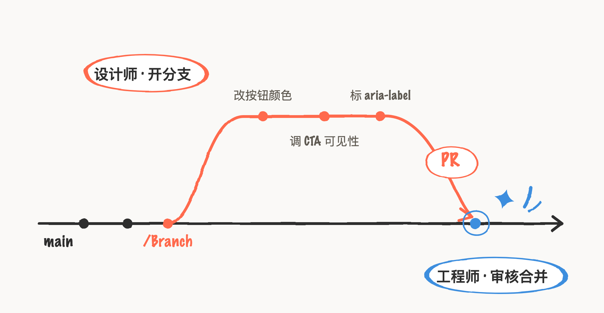
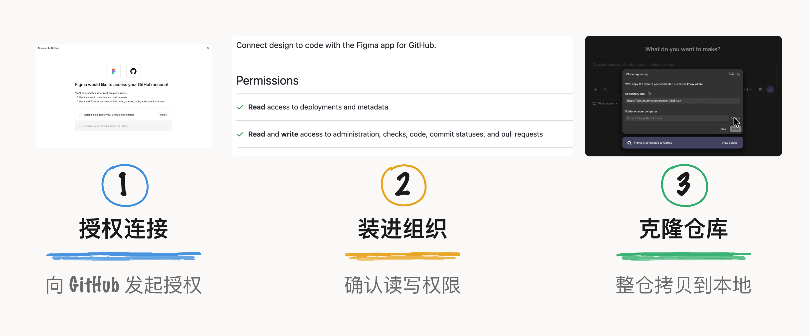
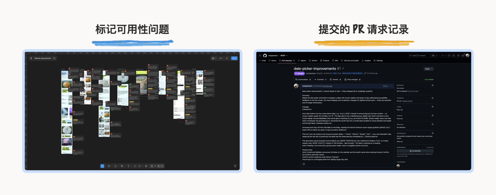
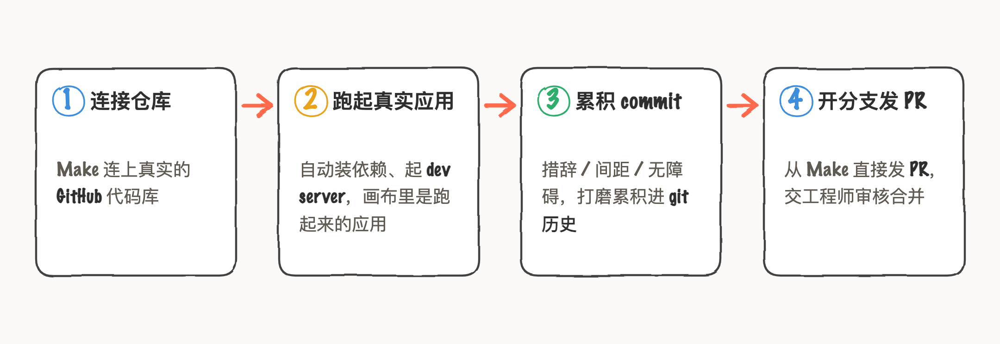
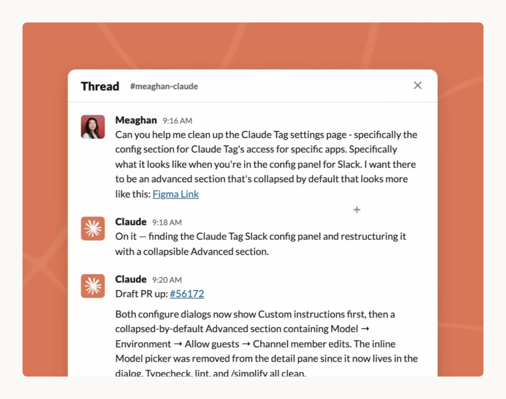

对于设计师来说，AI coding 有一个很实用的工作场景是， 解决最后 20% 的设计体验细节问题、提交 PR。
UI/UX 设计工作中，有一部分是线上体验优化需求，永远压在需求池里等排期，或者等着高优需求能够顺手带上，这类需求就是最后 20% ，需要更精细的完成度。工程师更擅长架构改造上，设计师更擅长负责细节完善，
以 Figma 为例，可以在 Make 连接本地仓库或从 GitHub 克隆一个仓库，用可视化的方式改代码、开分支、发 PR。这个工作流的的价值在于，工程师可以更专注于架构改造与审核，设计师负责从始至终的细节完善。

Branch, commit, and push
Figma Make 的 GitHub 连接功能，处于封闭测试版，需要加入 wishlist才有机会。入口开放在 Make 页面的 Chatbox 下方，连上一个真实的代码仓库，Make 自动装依赖、起本地 dev server，画布里渲染的是跑起来的真实应用；改动以本地 commit 累积，最后开一条新分支，从 Make 里直接发 PR 给工程师审核合并。
连接的入口长这样，从授权到把仓库 clone 进本地文件夹三步走完；Make 拿到的是一份完整的本地拷贝，画布里跑的就是这份代码：

用一个叫「未来博物馆 MOSF」的虚构案例，演示了整套流程。案例里的设计师要改几样东西：导航标签措辞、CTA 可见性、空搜索结果的提示文案。改的过程中发现日期选择器是共享组件，改一处得在三个地方同步修改——这是在真实代码库里才会碰到的问题。如果只是传统的需求工单流程，设计师看不到代码，根本不知道一个选择器被复用了几次。

案例里还用 Figma 注释标了 aria-label、屏幕阅读器文本和焦点顺序。这些无障碍细节正是最容易被「下个版本再说」砍掉的；设计师在代码里直接标注，这些决策第一次以 commit 的形式留进了 git 历史。
创建 PR 这一步要学的是：分支推上去之后，GitHub 网页会提示「Compare & Pull Request」，点进去填 Title 和 Description、按需选 Reviewers；或者用使用 GitHub CLI 命令行 gh pr create 。
整条链路捋下来是四步：

•Figma 的好处是可视化 Code，对于不写 code 的设计师来说，可以选择元素，调整属性，更改布局、颜色、字体或尺寸，Agent 会找到相关的代码并进行编辑。这是在 Code 中进行精确编辑，同时拥有探索的自由。
目前 Figma Make 是单向的，只能 Make 到 GitHub。设计师发了 PR、工程师审核合并之后，代码库更新了，Make 侧不会自动拉回这些变化。下次再改，设计师看到的基础可能已经过时了。工程师在 PR 里改了一行，设计师在 Make 里完全不知道，对协作来说这是个很实际的断点。
设计师直接交付代码
AI native 公司的设计师已经在做设计师直接交付这件事了。Anthropic 的 Claude Code 设计负责人 Meaghan Choi 日常直接 ship 代码，在 Slack 里用 Claude Tag 协作。但她的做法有一条清晰的边界：交出去的是自己信任 AI 能做好的部分，复杂的设计判断仍然在 Figma 里完成。即便在把这当日常的团队，信任也是一步一步给的。
她和 Claude Tag 的日常协作长这样，聊天里丢需求带上 Figma 链接，几分钟后草稿 PR 就挂出来了：

从这两例设计工作方法看出，这套协作是另一种交接。更精细的收尾、无障碍改进这些决定完整体验的润色，设计师直接在代码里工作。不要求设计师变成工程师、工程师变成设计师，各自把判断力花在最各自擅长的地方，从画布一路带进合并的 PR。
本文素材来自 Figma 官方博客 Workflow Lab: Deploying designs directly with Figma Make 及 Dive Club 播客 Meaghan Choi 访谈。